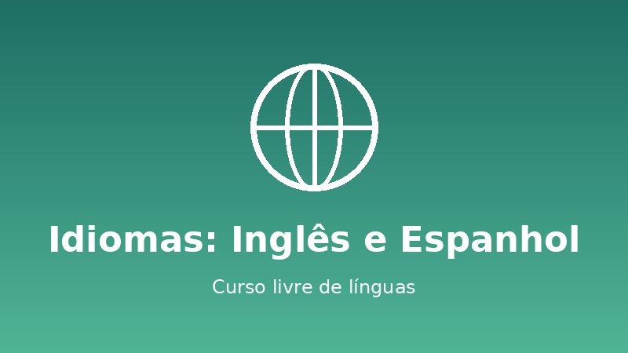
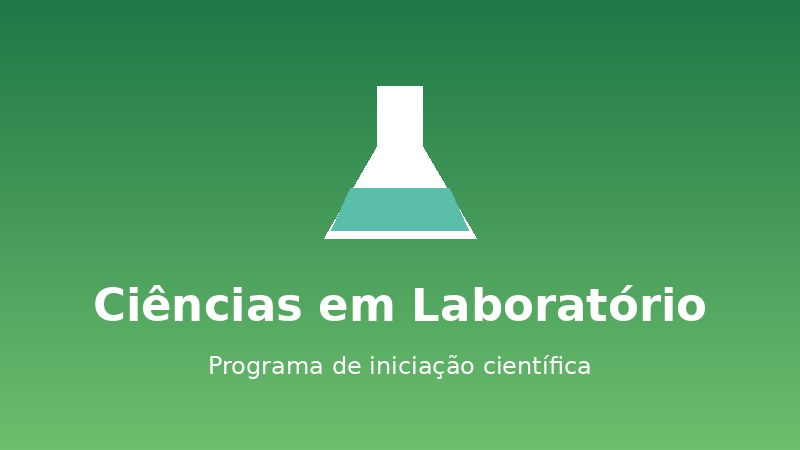

Informática e Programação
Aborda lógica de programação, HTML, CSS, JavaScript, Python e banco de dados. O estudante conclui o curso com um portfólio de projetos reais desenvolvidos em equipe.
Instituto Horizonte de Educação
Do ensino técnico à graduação, passando por idiomas e projetos de extensão, o Horizonte tem um caminho para cada estudante.
Aborda lógica de programação, HTML, CSS, JavaScript, Python e banco de dados. O estudante conclui o curso com um portfólio de projetos reais desenvolvidos em equipe.

Forma educadores para a educação infantil e os anos iniciais do ensino fundamental, com estágios supervisionados em escolas públicas parceiras desde o primeiro ano.

Turmas por nível, do básico ao avançado, com ênfase em conversação, preparação para exames de proficiência e cultura dos países de língua inglesa e espanhola.

Montagem, programação e testes de robôs com kits educacionais. Preparação das equipes para olimpíadas e torneios regionais.

Desenho, fotografia, edição de vídeo e produção de conteúdo digital, com exposições semestrais abertas ao público.

Experimentos de Física, Química e Biologia, com orientação de professores e apresentação dos resultados na feira anual de ciências.
Deslize a tabela para o lado para ver todas as colunas.
| Curso / Programa | Modalidade | Duração | Carga horária | Turno | Público-alvo |
|---|---|---|---|---|---|
| Informática e Programação | Técnico integrado | 3 anos | 3.000 h | Manhã | Concluintes do ensino fundamental |
| Licenciatura em Pedagogia | Graduação presencial | 4 anos | 3.200 h | Noite | Concluintes do ensino médio |
| Idiomas: Inglês e Espanhol | Curso livre | 6 semestres | 360 h | Tarde e noite | Jovens e adultos |
| Robótica Educacional | Extensão | 2 semestres | 120 h | Tarde | Jovens de 12 a 17 anos |
| Artes e Cultura Digital | Oficina | 1 semestre | 80 h | Sábado | Público em geral |
| Ciências em Laboratório | Iniciação científica | 2 semestres | 100 h | Tarde | Estudantes do ensino médio |